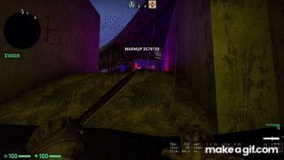
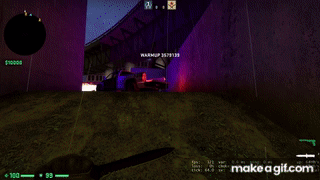
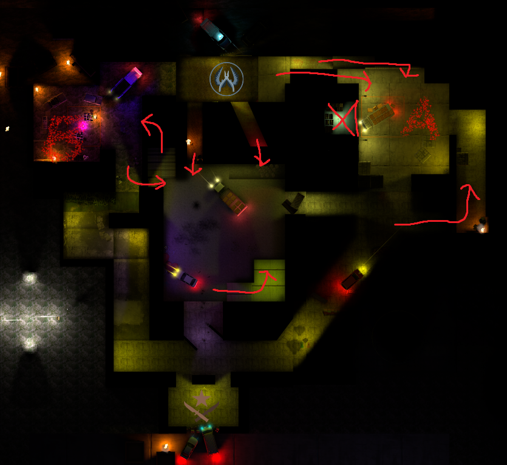

Taking Risks
This CS:GO map was designed with the game's community in mind. Modern CS:GO players are hesitant to try new maps, either because the maps are too different from what they know or because they are too generic.
How does one create a new map for this audience?
I think part of the answer is to choose which elements to keep familiar and take a risk somewhere else.
With de_Under I chose to use a three lane map design, since it is the most common for CS:GO and most other multiplayer FPS games.
This however, does put the map at risk of becoming too generic, so I decided to take a risk with lighting. The level is generally dark, with diegetic lighting illuminating most parts of the map, but deliberately leaving certain areas dark.
This is big risk since CS:GO is a very competetive game, and not being able to distinguish enemies from their surroundings is a big issue that developers try to accommodate their maps for.
It wasn't a complete shot in dark, either. The cover of darkness benefits sneaky players, which fits the "lurker" role within CS:GO. Therefore, at least somebody could enjoy the concept.
Taking this element which is usually a problem that needs to be solved into a feature would, for better or worse, make the map feel fresh. Since I was operating in a no-risk environment I could comfortably take this risk and learn from it.
Design process
With Dan Taylor's 10 principles for good level design in mind, I wanted to focus on a couple of them, the first being "good level design is fun to navigate".
Combining this principle with the princple of "good level design empowers the player", I thought about parkour and its role in the CS:GO community. Jumps such as
the ones from the mid window on de_Mirage is a way to reward player skill and effort in a fun and empowering way. While I did not want to make my map a dedicated parkour map,
I decided to have a couple of spots that either explicitly rewarded parkour by allowing access to certain areas or just make traversal more fun.

This grants access to a position that the Counter-Terrorist (defending) team would not otherwise reach.

Just a more fun way to get into position. Of course this could also be used for aggressive retakes of the bombsite.
With verticality in mind I also decided to make it feel tangible by using drops as part of traversal from elevated power positions. In my opinion it gives the roller coaster tickle in your tummy
and makes the height feel more visceral.
 This allows the player to safely drop down without taking damage, while simultaneously providing variation to traversal.
This allows the player to safely drop down without taking damage, while simultaneously providing variation to traversal.
Storytelling
CS:GO has a narrative system where they use details in the environment to spark speculations about the story in the community. This means implicit and emergent narrative is the main focus, rather than explicit narrative.
Storywise, CS:GO has been hinting at how the Counter-Terrorstis might not be the "good guys". Wanting the level to fit into the world of CS:GO, I decided to use implicit and emergent narrative to tell a story about police corruption.
 While maybe a little too on the nose, this scene portays an area in which illegal goods such as narcotics and weapons are being sold. There is also a police car at the scene. Wait, why are the terrorists the ones trying to blow the place up?
While maybe a little too on the nose, this scene portays an area in which illegal goods such as narcotics and weapons are being sold. There is also a police car at the scene. Wait, why are the terrorists the ones trying to blow the place up?

 This area shows a a truck unloading crates. Upon closer inpsection, players of the game would recognize the crates as the ones used to store weapon skins within CS:GO. So this is the supplier of the weapons, but once again, why are the terrorists the ones trying to stop it?
This area shows a a truck unloading crates. Upon closer inpsection, players of the game would recognize the crates as the ones used to store weapon skins within CS:GO. So this is the supplier of the weapons, but once again, why are the terrorists the ones trying to stop it?
Layout

The image above uses some red arrows to show paths that are shrouded either by roofs or darkness.
I chose to follow the common three lane map design because it is very familiar to CS:GO players and would allow them to learn the map much faster. There are however some interesting things going on in the layout.
The level is intended to allow for quick rotations on the fly for both teams and incentivise control over the middle area. Control over the middle will allow the Terrorists to quickly refocus their attack on the other bombsite and gives the Counter-Terrorists cruical
alternative routes for retaking the sites.
The chokepoint for bombsite A is by the crossroad outside the site, when the Terrorists reach the car in the alley and when the Counter-Terrorists pass the truck on site. This creates a chokepoint where both teams are in rather open positions, encouraging fast gameplay.
The idea is to allow the Terrorists to use the site for rushing tactics. Even if the main entrance to the site is smoked off, the Terrorists then have a path to their right to get an alternative entry point, or go to the left and contest the middle of the level.
This makes for a strategically important position, that both teams will need to take risks to contol.
The bombsite B chokepoint is right at the big turn before the homestrech to the site. This allows Counter-Terrorists to either play aggressively and face the Terrorists in close quarters combat, or use utilty such as smokes and incendiary grenades to defend the passageway.
Once again, the chokepoint is very important for both teams, since whoever controls it also has access to the middle, and an alternative route into the bombsite.
Lessons learned
The main lesson I learned is about my level design pipeline. When making this level I only had a vague idea of setting, being that I wanted it to be "in some kind of city." This meant that I didn't consider the coherence of the world setting when creating
my block-out for the level. While being able to focus on gameplay arguably made the level play better, it caused some issues with world building. Some buldings simply didn't make sense.
Having learned from this, I in my next project instead kept the level grounded in a believable environment. This instead challenged me to create suitable cover for an FPS arena and make a "real" place fun to play in. Without a doubt however, including the world setting as part
of my level design in the concept and prototype phases is very important and has allowed me to create better levels with better "feeling" and immersion. LINK TO UNREAL FPS